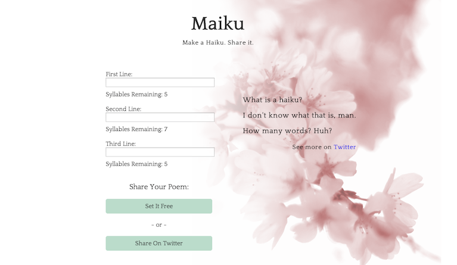
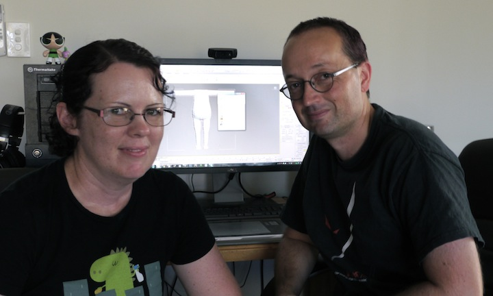

Get Your Crayon
A Chrome extension designed to allow anyone to draw on any webpage and share it with the world. Uses paper.js to render vectors. Developed with classmates at Dev Bootcamp, Chicago (2014).

Maiku
Making haiku poems easier to make. A simple web app that helps users count syllables of words as they write, allowing them to post to Twitter when they're done. Dynamic Javascript front-end.

The Rebirth of Brisbane's Indie Game Makers
Documentary for Radio National in Australia, profiling the collapse and rebirth of the game development industry in Brisbane. Nicole and Jason Stark, pictured above, helped inspire me to pursue a career in technology. Originally aired on December 15, 2012.